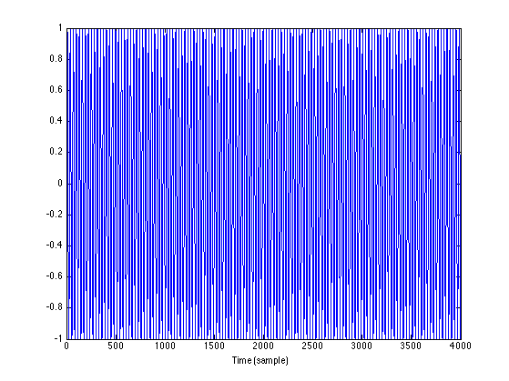
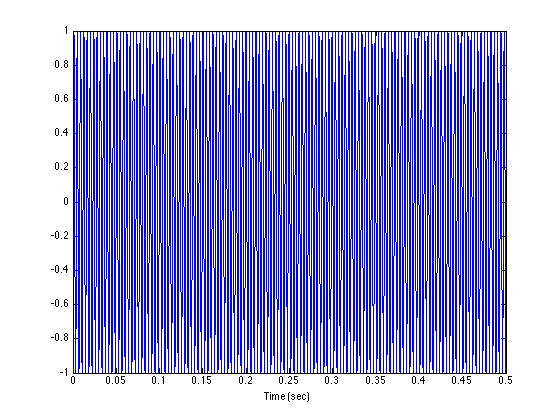
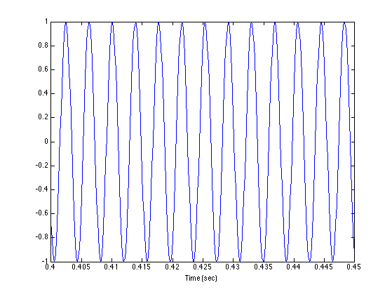
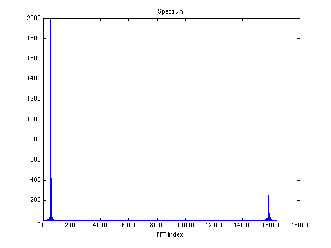
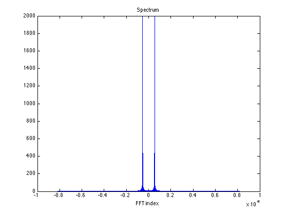
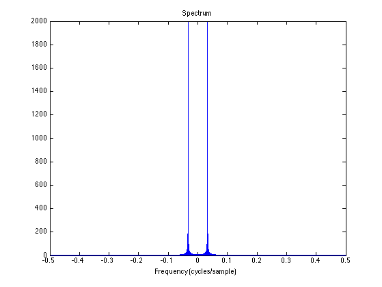
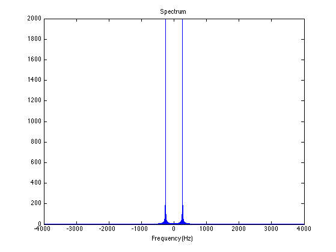
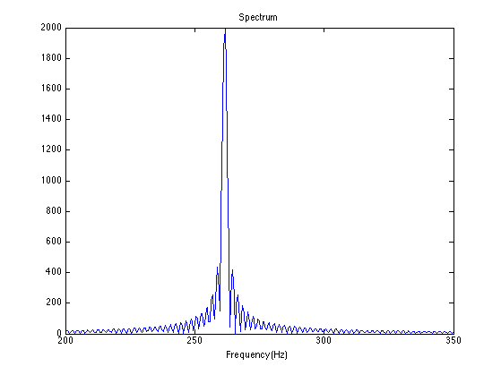
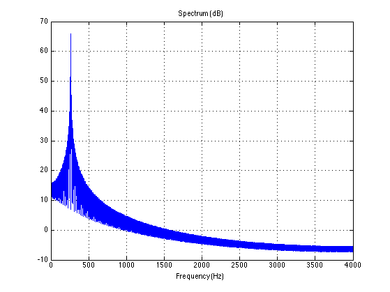

read_sin_01.m
View parameters, plot waveform, compute and display spectrum. Verify that the frequency of the sinusoid (as measured using the FFT) is the expected frequency.
Contents
clear
Load .wav file
[x, Fs, nbits, opts] = wavread('sin_01_mono.wav');
whos
Name Size Bytes Class Attributes Fs 1x1 8 double nbits 1x1 8 double opts 1x1 1280 struct x 4000x1 32000 double
Fs nbits opts.fmt
Fs =
8000
nbits =
16
ans =
wFormatTag: 1
nChannels: 1
nSamplesPerSec: 8000
nAvgBytesPerSec: 16000
nBlockAlign: 2
nBitsPerSample: 16
soundsc(x, Fs)
Plot waveform
figure(1)
clf
plot(x)
xlabel('Time (sample)')
 Time axis in seconds
N = length(x);
t = (1:N)/Fs;
figure(1)
clf
plot(t, x)
xlabel('Time (sec)')
 Zoom in to 50 msec
xlim(0.4 + [0 0.050])
What is the quantization increment ?
x(100:110)
ans =
0.9969
0.9918
0.9450
0.8584
0.7357
0.5820
0.4038
0.2087
0.0048
-0.1993
-0.3951
x(100:110) * 2^14
ans =
1.0e+04 *
1.6334
1.6250
1.5482
1.4063
1.2053
0.9535
0.6616
0.3419
0.0078
-0.3266
-0.6473
x(100:110) * 2^15
ans =
32667
32500
30965
28127
24106
19070
13233
6838
156
-6532
-12946
% Quantization size is 1 / 2^15
2^15
ans =
32768
Frequency spectrum
Use Fast Fourier Transform (FFT)
% Use power of 2 for FFT efficiency N = length(x) Nfft = 2^ceil(2+log2(N)) % Use FFT length longer than signal length
N =
4000
Nfft =
16384
Compute Fourier transform
X = fft(x, Nfft); k = 0:Nfft-1; % FFT index figure(1) clf plot(k, abs(X)) xlabel('FFT index') title('Spectrum')
Center dc
X2 = fftshift(X); k2 = -Nfft/2 : Nfft/2-1; figure(1) clf plot(k2, abs(X2)) xlabel('FFT index') title('Spectrum')
Normalized frequency
Normalized frequency is in units of [cycles per sample]
fn = ( -Nfft/2 : Nfft/2-1 ) / Nfft; figure(1) clf plot(fn, abs(X2)) xlabel('Frequency (cycles/sample)') title('Spectrum')
Frequency in Hz
f = fn * Fs; figure(1) clf plot(f, abs(X2)) xlabel('Frequency (Hz)') title('Spectrum')
Zoom to frequency band [200 350] Hz. Notice the sidelobes
xlim([200 350])
Fourier transform in dB
X_dB = 20*log10(abs(X2)); figure(1) clf plot(f, X_dB) xlabel('Frequency (Hz)') title('Spectrum (dB)') xlim([0 Fs/2]) grid print -dpdf read_sin_01_spectrum